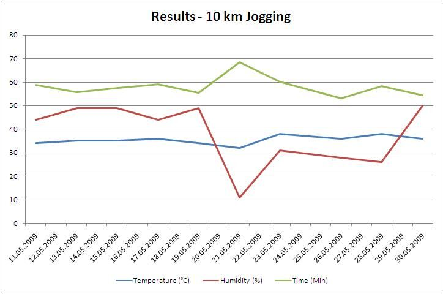

Hier eine Grafik meiner Laufergebnisse im Mai 2009. Wenn ich nur 5 km gelaufen bin, habe ich die Zeit verdoppelt und 20 % aufgeschlagen. Das schlechte Ergebnis vom 20. bis 23. Mai liegt an meinem schmerzenden Zeh.

30. Mai 2009
Übersetzt aus dem Englischen
Hier eine Grafik meiner Laufergebnisse im Mai 2009. Wenn ich nur 5 km gelaufen bin, habe ich die Zeit verdoppelt und 20 % aufgeschlagen. Das schlechte Ergebnis vom 20. bis 23. Mai liegt an meinem schmerzenden Zeh.
